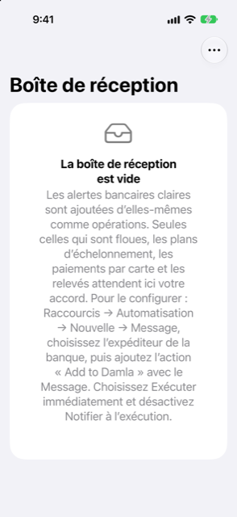

Guide › Enregistrer l’argent
La boîte de réception
Là où tout ce qui n'est pas clair attend un seul geste de votre part.
La boîte de réception garde les messages bancaires sur lesquels Damla n'a pas agi seul — parce qu'ils n'étaient pas clairs, ou parce qu'agir engagerait de l'argent à venir. Rien de la boîte de réception n'entre dans vos livres tant que vous ne touchez pas ; chaque élément est une brève vérification.

Quand l'utiliser
- Aujourd'hui affiche N en attente de votre accord.
- Un paiement que vous attendiez n'est pas apparu dans Activité.
- Une alerte mentionnait une carte ou un compte que Damla ne connaît pas encore.
Pas à pas
- Ouvrez Aujourd'hui et touchez N en attente de votre accord.
- Touchez un élément. Il s'ouvre dans l'écran d'ajout normal, le message déjà lu.
- Vérifiez ce que Damla a trouvé sous Vérifier et enregistrer, et enregistrez. S'il manque quelque chose, touchez Complétez-le et remplissez le reste dans le formulaire.
- Touchez Enregistrer. L'élément quitte la boîte de réception dès que vous l'enregistrez.
- Pour abandonner plutôt un élément, touchez-le puis Abandonner.
- Pour en retirer plusieurs d'un coup, touchez Modifier dans la liste et supprimez-les.
Un avis de relevé ne vous propose pas de transaction à enregistrer : touchez Vérifier le relevé pour ouvrir la vérification du relevé. Appliquez-le et il quitte la boîte de réception.
Pourquoi un message attend
- Un plan d'échéances : il engage de l'argent à venir, donc il attend votre accord.
- Un paiement par carte : le message ne dit pas quel compte l'a payé.
- Des chiffres qui ne correspondent à aucun compte encore : complétez-le une fois et Damla retient ces chiffres pour toujours.
- Un achat dans une devise pour laquelle Damla n'a pas encore de taux de change : il demande ce qui a été débité sur la carte.
- Un doublon possible d'un paiement ajouté à l'instant : abandonnez-le s'il s'agit du même achat.
- Un message qui n'a pas du tout pu être lu comme une alerte bancaire.
- Un avis de relevé, qui concerne la facture de la carte, pas un achat.
Bon à savoir
- Le même message livré deux fois — un Raccourci déclenché deux fois, une copie transférée — attend une fois, pas deux.
- Un code à usage unique est jeté et jamais conservé.
- Un message qui ne parle pas du tout d'argent n'est ni conservé ni listé, si bien qu'un message privé ne se retrouve jamais dans la boîte de réception.
- Une alerte qui arrive pendant que le téléphone est verrouillé attend sur le téléphone et est ajoutée à la prochaine ouverture et au prochain déverrouillage de l'app.
- Une transaction que vous enregistrez depuis la boîte de réception est conservée comme venant d'une alerte bancaire, si bien qu'elle apparaît dans Activité comme toute autre ajoutée par alerte.
Alertes récentes
Alertes récentes, dans Réglages, est un journal des 50 dernières alertes, les plus récentes d'abord. Chacune porte une brève raison : ajoutée, en attente dans la boîte de réception (et pourquoi), déjà enregistrée, ignorée, ou notée (une facture à venir). Servez-vous-en pour vérifier que votre automatisation tourne, et pour voir pourquoi un message est allé là où il est allé.
En rapport
- Coller ou partager un message
- Comment fonctionne la capture automatique
- Ce que Damla ignore, et annuler une alerte
- Cartes de crédit
Quelque chose n’est pas clair ou manque ? Écrivez à support@raveniq.ai en indiquant la page.